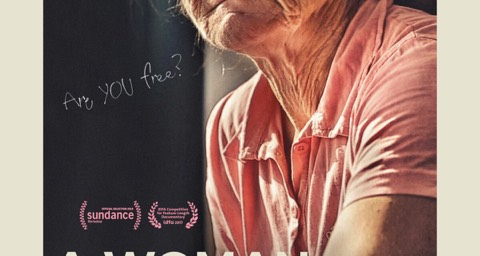
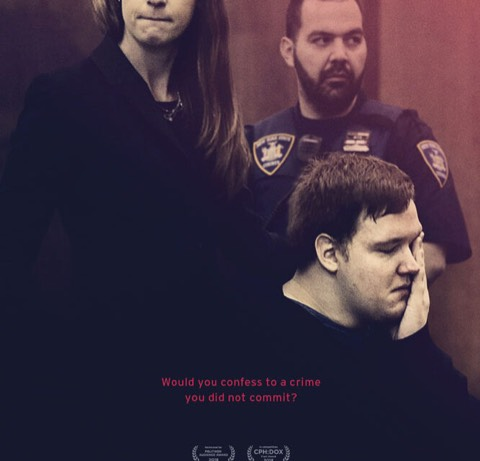
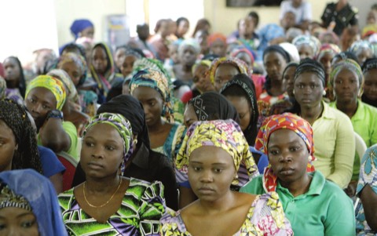
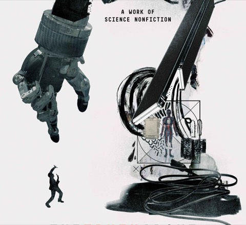

Double Exposure 2018
The fourth edition: October 10-14, 2018 · In person.
Venues: The Smithsonian’s National Portrait Gallery, National Union Building, The Loft at 600 F, Naval Heritage Center, The Hotel Monaco’s Dirty Habit, The Hotel Monaco’s Courtyard, National Union Building’s Owlstone
Programme source: the 2018 festival catalogue (PDF, in the Wayback Machine) and the festival website.
War, conflict & the militaryRace & civil rightsChildren & educationMiddle East & South AsiaWomen, gender & sexualityCorruption & powerFunding & distributionReligion
Films
 WatergateCharles FergusonOpening Night
WatergateCharles FergusonOpening Night Divide and Conquer: The Story of Roger AilesAlexis BloomClosing Night
Divide and Conquer: The Story of Roger AilesAlexis BloomClosing Night
A Woman CapturedBernadett Tuza-Ritter2018 · 89 min Angels Are Made of LightJames Longley2018 · 117 min
Angels Are Made of LightJames Longley2018 · 117 min
False ConfessionsKatrine Philp2018 · 91 min Ghost FleetShannon Service, Jeffrey Waldron2018 · 88 min
Ghost FleetShannon Service, Jeffrey Waldron2018 · 88 min Of Fathers and SonsTalal Derki2018 · 99 min
Of Fathers and SonsTalal Derki2018 · 99 min People’s Republic of DesireHao Wu2018 · 95 min
People’s Republic of DesireHao Wu2018 · 95 min Roll Red RollNancy Schwartzman2018 · 80 min
Roll Red RollNancy Schwartzman2018 · 80 min
Stolen Daughters: Kidnapped by Boko HaramKaren Edwards, Gemma Atwal2018 · 75 min The Feeling of Being WatchedAssia Boundaoui2018 · 87 min
The Feeling of Being WatchedAssia Boundaoui2018 · 87 min The Panama PapersAlex Winter2018 · 100 min
The Panama PapersAlex Winter2018 · 100 min
The Truth About Killer RobotsMaxim Pozdorovkin2018 · 82 min The UnafraidHeather Courtney, Anayansi Prado2018 · 87 min
The UnafraidHeather Courtney, Anayansi Prado2018 · 87 min UnprotectedNadia Sussman2018 · 45 min
UnprotectedNadia Sussman2018 · 45 min
Shorts
- How We ChooseAlexandria Bombach2018 · 15 min
- Nellie Bly Makes the NewsPenny Lane2018 · 23 min
- Our New PresidentMaxim Pozdorovkin2018 · 12 min
- The TrialJohanna Hamilton2018 · 17 min
- We Became FragmentsLuisa Conlon, Hanna Lane Miller, Lacy Jane Roberts2018 · 14 min
Forum sessions and events
Wednesday, October 10, 2018
- Wed Oct 10 · 9:45 PMReceptionOpening Night Party
Thursday, October 11, 2018
- Thu Oct 11 · 9:30 AMConversationOpening Conversation: Supreme Truth: From High School Halls to Hallowed WallsElizabeth Bruenig, Nancy Schwartzman, Cheryl W. Thompson
- Thu Oct 11 · 11:00 AMPanelPivot: The Unexpected MomentMarcia Davis, Paco De Onís, Bridget Hunnicutt, Patrick Radden Keefe, Gordon Witkin, Pamela Yates
- Thu Oct 11 · 1:15 PMPanelFraming Trauma: The Crises of WitnessingSasha Joelle Achilli, Karen Edwards, Marilyn Ness, Elana Newman, Stephanie Wang-Breal
- Thu Oct 11 · 2:45 PMPanelUnmediated SubjectsAlexandria Goddard, Alex Long, Carrie Lozano, Aldo E. Mendoza-Guerra, Irma Alicia Velásquez Nimatuj
- Thu Oct 11 · 4:15pmPanel · DX²Elegy & EvidenceStephen Maing, Yance Ford, Topher Sanders
- Thu Oct 11 · 4:15 PMConversationElegy and Evidence: A Conversation with Yance Ford (Strong Island) and Stephen Maing (Crime + Punishment)Yance Ford, Stephen Maing, Topher Sanders
- Thu Oct 11PitchDX Academy Student Pitch
Friday, October 12, 2018
- Fri Oct 12 · 9:30 AMPanel · DX²Into the Deep FakeLee Foster, Sam Gregory, Edward Klaris, Robert Maguire, Maxim Pozdorovkin, Ed Klaris
- Fri Oct 12 · 11:00 AMPanelSecurity Case Studies with Safe + Secure at Doc SocietyAssia Boundaoui, Harlo Holmes, Stephen Maing, Elana Newman, Connie Pendleton, Sara Rafsky, Shannon Service
- Fri Oct 12 · 1:15 PMPanelInterrogating DataRobin Bell, Assia Boundaoui, Stephen Engelberg, Jennifer Gradecki, Doyle McManus
- Fri Oct 12 · 2:45 PMPanelCollaborative Responses to ThreatEmilia Diaz-Struck, Daniel Grinberg, Patricia Eunji Kim, Laurent Richard, Ricardo Sandoval-Palos, Bethany Wiggin
- Fri Oct 12 · 4:15 PMConversationClosing Conversation: Journeys Across the Abyss in Print and ScreenJames Longley, Shannon Service, Janet Reitman
- Fri Oct 12 · 4:15pmPanel · DX²Journeys Across the AbyssShannon Service, Janet Reitman, James Longley
- Fri Oct 12 · 10:00 PMReceptionThursday Reception
- Fri Oct 12PitchDocs In Progress Peer Pitch at Double Exposure
Saturday, October 13, 2018
- Sat Oct 13 · 10:00 AMWorkshopWorkshop: Fact-Checking for Filmmakers, Presented by the Pulitzer Center on Crisis ReportingHilke Schellmann, Poh Si Teng
- Sat Oct 13 · 10:15 AMEventPro Bono Legal ClinicTheodore Frank, Edward Klaris, Sarah Matthews, Lisa Zycherman
- Sat Oct 13 · 10:30 AMWorkshopWorkshop: Crypto PartyNima Fatemi, Harlo Holmes, Olivia Martin
- Sat Oct 13 · 11:45 AMWorkshopWorkshop: Research DeskJohanna Hamilton, Shola Lynch, Margot Williams
- Sat Oct 13 · 2:15 PMWorkshopWorkshop: Exposing the InvisibleLaura Ranca
- Sat Oct 13 · 2:15 PMWorkshopWorkshop: Planning for VisualsSusanne Reber
- Sat Oct 13 · 2:15 PMWorkshopWorkshop: Saving the StoryLaurent Richard, Patricia Eunji Kim
- Sat Oct 13 · 5:30 PMReceptionFriday Happy Hour
Sunday, October 14, 2018
- Sun Oct 14 · 11:00 PMReceptionClosing Night Reception
Date not listed
People
Filmmakers 28
- Sasha Joelle Achilli
- Gemma Atwal
- Alexis Bloom
- Alexandria Bombach
- Assia Boundaoui
- Jon Bowermaster
- Will Cohen
- Luisa Conlon
- Heather Courtney
- Talal Derki
- Jessica Devaney
- Karen Edwards
- Charles Ferguson
- Johanna Hamilton
- Penny Lane
- James Longley
- Hanna Lane Miller
- Katrine Philp
- Maxim Pozdorovkin
- Anayansi Prado
- Lacy Jane Roberts
- Nancy Schwartzman
- Shannon Service
- Nadia Sussman
- Bernadett Tuza-Ritter
- Jeffrey Waldron
- Alex Winter
- Hao Wu
Moderators 6
Panelists & speakers 77
- Sasha Joelle Achilli
- Laila Al-Arian
- Robin Bell
- Richard Ben-Veniste
- Alexis Bloom
- Assia Boundaoui
- Elizabeth Bruenig
- Heather Courtney
- Lindsay Crouse
- Marcia Davis
- Emilia Diaz-Struck
- Karen Edwards
- Stephen Engelberg
- Lauren Feeney
- Charles Ferguson
- Kathleen Flynn
- Yance Ford
- Lee Foster
- George Frampton
- Theodore Frank
- Erica Ginsberg
- Alexandria Goddard
- Jennifer Gradecki
- Sam Gregory
- Daniel Grinberg
- Harlo Holmes
- Melissa Houghton
- Bridget Hunnicutt
- Will Jenkins
- Patrick Radden Keefe
- Ashley Bloom Kenny
- Patricia Eunji Kim
- Edward Klaris
- Ed Klaris
- Lance Kramer
- Joanne Lawler
- Sheila Leddy
- Rachel de Leon
- Alex Long
- James Longley
- Carrie Lozano
- Robert Maguire
- Stephen Maing
- Sarah Matthews
- Doyle McManus
- Aldo E. Mendoza-Guerra
- Claudia Milne
- Marilyn Ness
- Elana Newman
- Irma Alicia Velásquez Nimatuj
- Paco De Onís
- Connie Pendleton
- Maxim Pozdorovkin
- Sara Rafsky
- Janet Reitman
- Laurent Richard
- Anabelle Rojas
- Topher Sanders
- Ricardo Sandoval-Palos
- Steve Sapienza
- Nancy Schwartzman
- Shannon Service
- Rod Seward
- Joel Stonington
- Nadia Sussman
- Zach Toombs
- Lea Trusty
- Bernadett Tuza-Ritter
- Chloe Walters-Wallace
- Stephanie Wang-Breal
- Bethany Wiggin
- Alex Winter
- Gordon Witkin
- Hao Wu
- Pamela Yates
- Finlay Young
- Lisa Zycherman
Workshop leaders 12
- Nima Fatemi
- Johanna Hamilton
- Harlo Holmes
- Patricia Eunji Kim
- Shola Lynch
- Olivia Martin
- Laura Ranca
- Susanne Reber
- Laurent Richard
- Hilke Schellmann
- Poh Si Teng
- Margot Williams
Film subjects 10
- Roger Ailes
- Richard Ben-Veniste
- Carl Bernstein
- John Dean
- Rachel Dissell
- Jane Fisher-Byrialsen
- Alexandria Goddard
- Patima Tungpuchayakul
- Jill Wine-Banks
- Bob Woodward